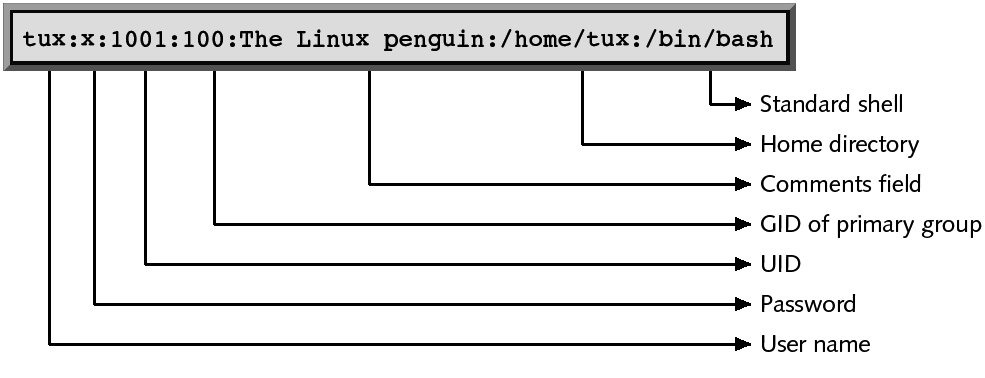
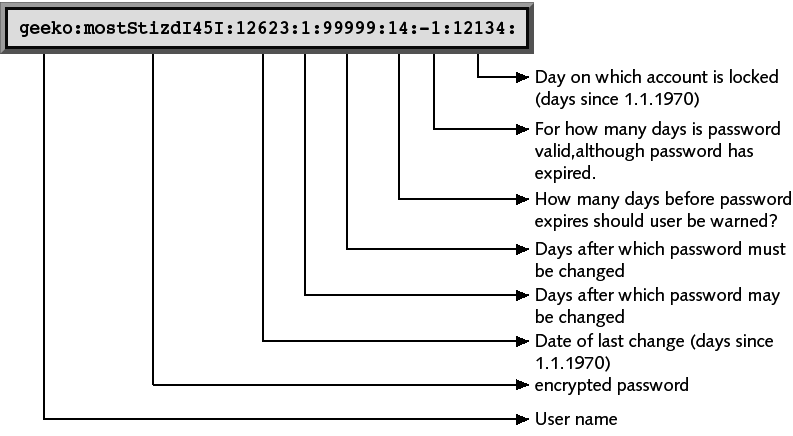

echo "1234" | cracklib-check
echo "micontra" | cracklib-check
echo "M1contra$" | cracklib-check1234: Es demasiado corta.micontra: Está basada en una palabra del diccionario.M1contra$: OKProgramación y Administración de Sistemas
(2022-2023)
Definir qué son usuarios del sistema, las características de los mismos y sus ficheros de configuración.
Enumerar y explicar los campos del fichero /etc/passwd y /etc/shadow.
Explicar las características que deberían tener las contraseñas para los usuarios.
Explicar el mecanismo de shadow passwords y el mecanismo de cifrado de contraseñas que evita guardar las contraseñas del sistema en texto plano.
Enumerar los mecanismos de revocación de contraseñas, las restricciones de tiempo en cuanto a la validez de las contraseñas y las herramientas de administración que permiten configurarlas.
Cambiar el intérprete de órdenes por defecto de los usuarios.
Configurar cuentas restrictivas para usuarios especiales.
Enumerar los pasos para añadir un usuario al sistema.
Utilizar herramientas administrativas para añadir o modificar cuentas de usuario.
Establecer el objetivo de los grupos de usuarios, identificar grupo primario y grupo activo de un usuario, enumerar y explicar los campos del fichero /etc/group.
Configurar grupos con contraseñas.
Utilizar las distintas herramientas administrativas para grupos.
Identificar usuarios y grupos estándar en un sistema GNU/Linux.
Cuestionarios objetivos.
Pruebas de respuesta libre.
Tareas de administración.
Definición de usuario
Persona que trabaja en el sistema, editando ficheros, ejecutando programas...
Pseudo-usuario: entidad, que sin ser una persona, puede ejecutar programas o poseer ficheros (se les reserva identificadores de 0 a 499) y se utiliza típicamente para servicios y tareas automatizadas.
Características básicas de un usuario:
Nombre de usuario (logname o username).
Identificador de usuario (UID): el sistema trabaja, internamente, con el UID y no con el nombre de usuario.
Identificadores de los grupos a los que pertenece (GIDs).
Ficheros de configuración: \(\;\)
/etc/passwd: información de las cuentas de usuarios.
/etc/shadow: passwords cifradas (hash de las contraseñas) e información de “envejecimiento” de las cuentas.
/etc/group: definición de los grupos y usuarios miembros.
/etc/gshadow: passwords de grupos cifradas.
Ejercicio: lista los permisos de todos estos ficheros y trata de entender la política de seguridad.
ls -l /etc/passwd /etc/shadow /etc/group /etc/gshadow/etc/passwdContiene la lista de usuarios del sistema y sus contraseñas.
Formato: nombre:password:uid:gid:gecos:home:shell.
nombre \(\rightarrow\) Nombre del usuario, logname o username.
password \(\rightarrow\) contraseña cifrada o:
“*” o “!!” \(\rightarrow\) la cuenta está desactivada o bloqueada.
“x” \(\rightarrow\) las shadow están activas, la contraseña cifrada se guarda en /etc/shadow.
uid \(\rightarrow\) identificador del usuario.
gid \(\rightarrow\) identificador del grupo primario al que pertenece.
gecos \(\rightarrow\) campo de información referente al usuario (nombre, teléfono, ...).
home \(\rightarrow\) Path del directorio $HOME del usuario.
shell \(\rightarrow\) Intérprete de órdenes.
/etc/passwdEl propietario del fichero es root y el grupo root.
Los permisos del fichero son rw-r-r-.
El programa /usr/sbin/vipw permite editar el fichero manualmente.
El programa pwck verifica la integridad de /etc/passwd y /etc/shadow.
Se permite el acceso al fichero /etc/passwd en modo lectura para poder leer información del usuario, pero no se debería permitir acceso a las passwords (aunque estén cifradas).
/etc/passwd
passwd <nombre_usuario> \(\Rightarrow\) asignar contraseña a un usuario (o cambiarla).
Elección de una contraseña adecuada
No utilizar:
Tu nombre, parte de él, o el de alguien cercano a ti.
Números significativos para ti o alguien cercano.
Nombre, nº, lugar o persona, relacionados con tu trabajo.
Nombres de gente famosa, lugares, películas, publicidad...
Palabras que estén en el diccionario (ver cracklib).
Consejos sin llegar a políticas absurdas:
Introducir 2 o más caracteres extras, símbolos especiales...
Escribir mal las palabras.
Utilizar mayúsculas y minúsculas, pero no de forma evidente.
Concatenar, embeber o mezclar 2 o más palabras.
Usar caracteres poco comunes: $, &, #...
La contraseña se debe cambiar cuando:
Se sospecha que alguien la ha podido conocer o averiguar.
Se sospecha que alguien ha conseguido el fichero con las contraseñas (/etc/passwd o /etc/shadow).
Un usuario se marcha del trabajo \(\Rightarrow\) cambiar todas las que conozca.
Un administrador del sistema se va \(\Rightarrow\) cambiar TODAS.
Un intruso ha conseguido entrar en el sistema.
Periódicamente, se debe forzar a que los usuarios cambien sus contraseñas, incluido el administrador.
pam_cracklib y pam_pwquality son dos herramientas para forzar políticas de seguridad de contraseñas fuertes.
Puedes ver un mínimo de fortaleza de una contraseña escribiendo por teclado:
cracklib-checkó así:
echo "1234" | cracklib-check
echo "micontra" | cracklib-check
echo "M1contra$" | cracklib-check1234: Es demasiado corta.micontra: Está basada en una palabra del diccionario.M1contra$: OKPermiten que las contraseñas cifradas no se guarden en el fichero /etc/passwd sino en /etc/shadow (más restringido).
/etc/shadow tiene los permisos rw------, y el usuario y grupo propietario es root.
rw-r---- y el grupo propietario es shadow (flexibilidad para comprobación de contraseña por usuarios que pertenezcan a dicho grupo).Este fichero guarda para cada usuario del sistema, la contraseña cifrada junto con su información de envejecimiento.
Solo para aquellos usuarios que tengan una “x” en /etc/passwd.
Por defecto, están activas y se actualizan automáticamente.

nom:pass:changed:minlife:maxlife:warn:inactive:expired:unused
nom \(\Rightarrow\) nombre del usuario, logname o username.
pass \(\Rightarrow\) contraseña cifrada.
mkpasswd -method=sha-512 contraseña saltComandos de actualización:
pwconv \(\Rightarrow\) crear y actualizar el fichero /etc/shadow.
pwunconv \(\Rightarrow\) desactivar los shadow passwords.
Para cifrar una contraseña, se utilizan algoritmos criptográficos de generación de resumen (función hash, \(H(\cdot)\)).
El mensaje en este caso es la contraseña (\(C\)).
salt (\(S\)) es una palabra aleatoria que se concatena a los bytes de contraseña \(\rightarrow\) dificulta ataques con diccionarios y tablas de hash precomputadas; añade aleatoriedad al resumen.
El sistema concatena \(C\) con \(S\), \(\{C,S\}\), calcula el resumen \(F=H(\{C,S\})\) y almacena \(S\) y \(F\).
Cuando el usuario introduce una contraseña \(C'\), se repite todo el proceso: \(F'=H(\{C',S\})\).
Si \(F=F'\), entonces el usuario puede entrar al sistema.
Propiedades deseables de las funciones de resumen:
Dado \(C\), debe ser fácil calcular \(H(C)\) \(\rightarrow\) para que el coste computacional no sea alto.
Dado \(H(C)\), debe ser extremadamente difícil calcular \(C\) \(\rightarrow\) para que las contraseñas originales no se puedan conocer sabiendo el resumen (fugas de información).
Dado \(C\), debe ser muy difícil encontrar otro mensaje \(C'\) tal que \(H(C)=H(C')\) \(\rightarrow\) para que dos usuarios no terminen con la misma contraseña.
Este tipo de funciones se denominan funciones de dispersión de un solo sentido.
Dos algoritmos: MD5 y SHA
MD5 (Message-Digest algorithm 5)
Aplica funciones no lineales a los 17 segmentos de 32 bits de un bloque de 512 bits.
Se obtiene un resumen de 128 bits.
Obtener suma MD5 (GNU/Linux):
md5sum Fichero.ext > Fichero.md5md5sum -c Fichero.md5Estándar del NIST.
Parecido a MD5, pero genera resúmenes más grandes, que lo hacen más seguro contra ataques de fuerza bruta o del cumpleaños.
Se pueden considerar 160, 224, 256, 384 o 512 bits para el resumen.
Obtener suma SHA (GNU/Linux):
shasum [-anumBits] Fichero.ext > Fichero.shashasum -c Fichero.shashasum /etc/passwd > resumen_pw.sha
cat resumen_pw.sha
shasum -c resumen_pw.sha073070775bc5a6c360148c81c079d8ae47d555a6 /etc/passwd/etc/passwd: OK/etc/shadow)Introducir restricciones de tiempo o envejecimiento para la validez de la cuenta o de la contraseña.
changed \(\Rightarrow\) fecha del último cambio de contraseña.
minlife \(\Rightarrow\) nº de días que han de pasar para poder cambiar la contraseña.
maxlife \(\Rightarrow\) nº de días máximo que puede estar con la misma contraseña sin cambiarla.
warn \(\Rightarrow\) cuántos días antes de que la contraseña expire (maxlife) el usuario será informado sobre ello, indicándole que tiene que cambiarla.
inactive \(\Rightarrow\) nº de días después de que la contraseña expire en que la cuenta se deshabilitará si no ha sido cambiada.
expired \(\Rightarrow\) fecha en la que la cuenta expira y se deshabilita de forma automática.
El fichero /etc/login.defs tiene los valores por defecto.
Comando chage (administrador):
chage -d ult_día usuario \(\Rightarrow\) último cambio de password.
chage -m min_días usuario \(\Rightarrow\) nº de días que han de pasar para poder cambiar la contraseña.
chage -M max_días usuario \(\Rightarrow\) nº de días máximo que puede estar con la misma contraseña sin cambiarla.
chage -W warn_días usuario \(\Rightarrow\) establece un aviso de que la contraseña expira un número de días antes de que expire, indicándole que tiene que cambiarla.
chage -I inac_días usuario \(\Rightarrow\) nº de días después de que la contraseña expire que la cuenta se deshabilitará de forma automática si la contraseña no ha sido cambiada.
chage -E exp_días usuario \(\Rightarrow\) fecha en la que la cuenta expira y se deshabilita de forma automática.
Supongamos que el usuario pagutierrez cambia su contraseña el 1 de marzo y root ejecuta estas órdenes:
chage -M 20 pagutierrez
chage -W 6 pagutierrez
chage -I 5 pagutierrez
chage -E 2023-10-30 pagutierrezLos tiempos quedan fijados de la siguiente manera:
El 14 de marzo pagutierrez recibirá el primer aviso para que cambie su contraseña.
El 20 de marzo, debería haber cambiado su contraseña.
Si no cambia la contraseña, como se ha fijado el tiempo de inactividad, la cuenta aún no se bloqueará.
Si el 25 de marzo pagutierrez no ha cambiado su contraseña, la cuenta será bloqueada.
La cuenta expira, pase lo que pase, el 30 de octubre.
Directorio /etc/skel/ \(\Rightarrow\) ficheros que se copian automáticamente a cada $HOME.
Los ficheros de inicialización son scripts shell que realizan tareas como dar valor a variables, nombrar alias, realizar funciones específicas...
Los ficheros dependen del intérprete de órdenes seleccionado: Bourne shell (sh), Bourne again shell (bash), C shell (csh)...
Incluyen el PATH, variables de entorno, umask, funciones de inicialización, alias, var. del propio shell...
Lo normal es que lean parte de su contenido de algún fichero global (/etc/profile, /etc/bash.bashrc)
.bash_profile en bash / .profile en bash y sh / .login en csh: Se ejecuta al hacer un login en el sistema por SSH o por terminal real.
.bashrc / .cshrc en csh: Cada vez que se ejecuta una shell en bash aunque no conlleve login.
.bash_logout en bash / .logout en C csh: Al salir del sistema el usuario (al finalizar la sesión)
En el último campo del fichero /etc/passwd, se establece el intérprete de órdenes que se ejecuta al entrar al sistema.
En el fichero /etc/shells se indican los shells permitidos.
Un usuario puede cambiar su shell con chsh:
chsh, pero los usuarios que ya lo tenían asignado lo podrán seguir usando.Si un usuario no tiene asignado ningún intérprete de órdenes, se usará el **shell por defecto /bin/sh.
Si se desea que el usuario no pueda entrar al sistema se le puede asignar /bin/false o /sbin/nologin.
También se puede establecer como shell un fichero ejecutable:
Las cuentas restrictivas permiten limitar las acciones de los usuarios en el sistema.
Se pueden crear de dos formas:
Asignar como shell un fichero ejecutable que realice una tarea determinada, y al terminar se sale del sistema:
Usuario para hacer copias de seguridad: como shell tiene un script que hace esa tarea.
Usuario para apagar el sistema: ejecuta la orden shutdown.
Los usuarios restrictivos de este tipo tienen que tener los permisos necesarios para poder hacer la tarea asignada. Estos permisos se asignan a nivel de identificador de usuario.
Usando el shell restrictivo /bin/rbash:
rbash es un enlace simbólico a /bin/bash (rbash es equivalente a /bin/bash -r).
Este intérprete se comporta como un intérprete normal, salvo que el usuario no puede hacer determinadas tareas, como:
Cambiar de directorio.
Establecer o modificar los valores de $PATH o $HOME.
Especificar nombres u órdenes que contengan /.
Usar redirección.
Utilizar la orden exec para reemplazar el shell por otro programa.
A estos usuarios hay que limitarles los ficheros que pueden ejecutar, copiándolos a un directorio y que su PATH sea sólo ese directorio. En otro caso, con un PATH “normal”, es casi como si no tuviesen restricciones.
Pasos a realizar (del 1 al 7, automatizados con herramientas):
Decidir el nombre de usuario, el UID, y los grupos a los que va a pertenecer (grupo primario y grupos secundarios).
Introducir los datos en los ficheros /etc/passwd y /etc/group (poniendo como contraseña “*”).
Asignar un password a la nueva cuenta.
Si las shadow están activas, escribir la contraseña.
Establecer los parámetros de envejecimiento de la cuenta.
Crear el directorio $HOME del nuevo usuario, establecer el propietario y grupo correspondiente y los permisos adecuados.
Copiar ficheros necesarios por defecto (.bash_profile, .bashrc...) desde /etc/skel/.
Establecer otras facilidades: quotas, mail, permisos, etc.
Ejecutar cualquier tarea de inicialización propia del sistema.
Probar la nueva cuenta.
Las herramientas de creación de cuentas de usuario suelen realizar todas las tareas básicas del proceso, a excepción de las específicas (quotas, impresión, etc.).
adduser o useradd \(\Rightarrow\) crear cuentas de usuario, o modificar cuentas ya existentes. Toma los valores por defecto de /etc/default/useradd y de /etc/login.defs.
useradd se salta algunos pasos.
usermod \(\Rightarrow\) modificar cuentas.
deluser o userdel \(\Rightarrow\) eliminar cuentas (por defecto no borra el directorio $HOME).
newusers \(\Rightarrow\) crea cuentas de usuarios utilizando la información introducida en un fichero de texto (en batch), que ha de tener el formato del fichero /etc/passwd (no copia los ficheros de inicialización).
users-admin \(\Rightarrow\) herramienta en modo gráfico.
Grupos: colecciones de usuarios que comparten recursos o ficheros del sistema.
Características de un grupo:
Nombre del grupo o groupname.
Identificador del grupo (GID) \(\Rightarrow\) internamente el sistema identifica al grupo por este número.
Objetivo: Garantizar permisos concretos para un conjunto de usuarios, sin tener que aplicarlos a cada uno.
El fichero de configuración es /etc/group, con el formato: nombre:x:gid:lista de usuarios
nombre \(\Rightarrow\) nombre del grupo.
gid \(\Rightarrow\) identificador del grupo.
lista de usuarios que pertenecen al grupo, sep. por “,”.
pas:x:519:pagutierrez,jsanchezm
Los grupos pueden tener contraseña \(\Rightarrow\) /etc/gshadow:
Si un usuario sabe la contraseña de un grupo, puede usarlo sin pertenecer a él con la orden newgrp.
Información en /etc/gshadow: grupo, contraseña, usuarios administradores (pueden cambiar la contraseña y los miembros) y miembros (idea parecida al /etc/shadow).
Tipos de grupos:
Primarios \(\Rightarrow\) grupo especificado en /etc/passwd.
Secundarios \(\Rightarrow\) otros grupos (indicados en /etc/group).
Funcionamiento de los grupos:
Al crear un fichero se establece como grupo propietario el grupo activo del usuario en ese momento.
Grupo activo \(\Rightarrow\) grupo primario (salvo que usemos newgrp).
Al determinar los permisos sobre un fichero, se usan todos los grupos del usuario.
addgroup grupo \(\Rightarrow\) crear un nuevo grupo.
groupmod grupo \(\Rightarrow\) modificar un grupo existente.
delgroup grupo \(\Rightarrow\) eliminar un grupo.
newgrp grupo \(\Rightarrow\) cambiar de grupo activo (lanza un shell)
gpasswd grupo \(\Rightarrow\) asignar una contraseña a un grupo:
gpasswd -a user grupo \(\Rightarrow\) añadir un usuario a un grupo.
groups [usuario] \(\Rightarrow\) grupos a los que pertenece un usuario.
id [usuario] \(\Rightarrow\) lista el identificador del usuario y los grupos a los que pertenece.
grpck \(\Rightarrow\) chequea la consistencia del fichero de grupos.
\(UID\in[0,99]\): Usuarios que representan al propio SO.
\(UID\in[100,499]\): Usuarios especiales que representan servicios o programas.
\(UID\ge 1000\): Usuarios normales.
Usuarios estándar:
root \(\Rightarrow\) Cuenta del administrador (\(0\)).
bin (utilidades comunes de usuarios, \(2\)), daemon (ejecución de demonios, \(1\)), lp, sync, shutdown, etc. \(\Rightarrow\) Tradicionalmente usados para poseer ficheros o ejecutar servicios
mail, news, ftp \(\Rightarrow\) Asociados con herramientas o facilidades.
postgres, mysql, xfs \(\Rightarrow\) Creados por herramientas instaladas en el sistema para administrar y ejecutar sus servicios.
nobody o nfsnobody \(\Rightarrow\) Usado por NFS y otras utilidades, usuario sin privilegios.
Grupos estándar:
root, sys.
bin, daemon, adm, lp, disk, mail, ftp, nobody, etc.
kmem \(\Rightarrow\) Grupo propietario de los programas para leer la memoria del kernel.
user o users \(\Rightarrow\) Grupo de los usuarios normales (no siempre se usa).
Evi Nemeth, Garth Snyder, Trent R. Hein, Ben Whaley and Dan Mackin. UNIX and Linux System Administration Handbook, 5th Edition. Capítulo 8: User Management. Addison-Wesley. 2018.
Aeleen Frisch. Essential system administration. Capítulo 6. Managing users and groups. O’Reilly and Associates. Tercera edición. 2002.